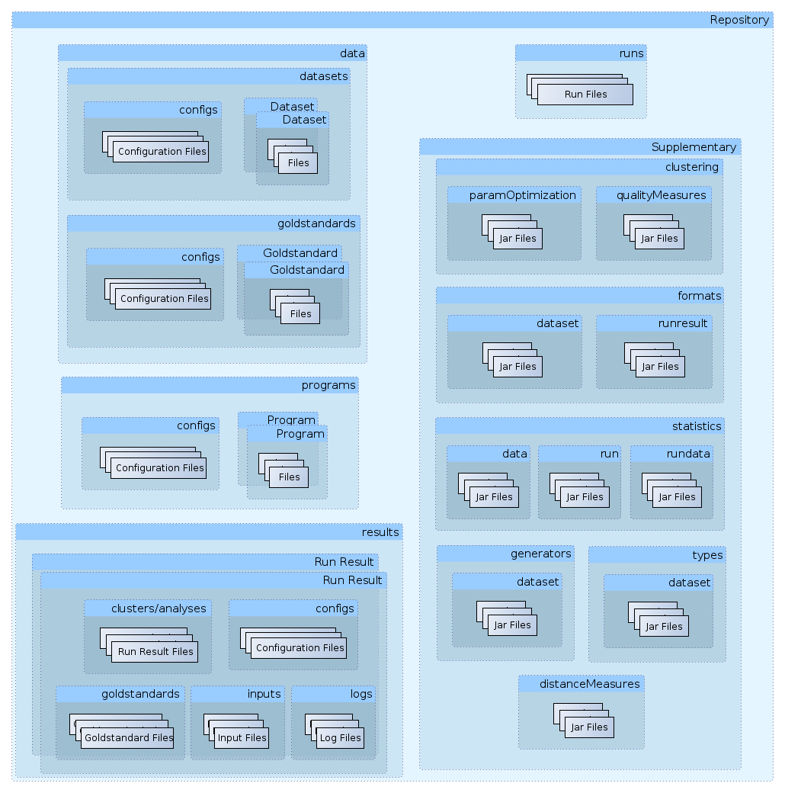

Repository - The Central Storage of ClustEval¶
The backend server is based on a central repository which concludes all files in its folder structure. You can easily start a framework with a different set of files by simply using another repository.
Folder Structure¶

The folder structure of a repository
- data: Contains all data-related files.
- configs [*.dataconfig]: Contains the data configuration files 4.9.1.
- data sets: Contains all data set-related files 4.3.
- configs [*.dsconfig]: Contains the data set configuration files 4.9.3.
- [subfolder for every data set]: The data set files themselves.
- goldstandards: Contains all goldstandard-related files 4.4.
- configs [*.gsconfig]: Contains the goldstandard configurations 4.9.5.
- [subfolder for every goldstandard]: Contains the goldstandard files themselves.
- programs: Contains all program-related files
- configs [*.config]: Contains all program configuration files 4.9.7.
- [subfolder for every program]: The program files themselves.
- results: The results of run executions 4.11.
- [subfolder for every run execution]: A subfolder contains the results of one run execution.
- clusters: The clustering results, including clustering qualities and graphics.
- configs: Copies of all used configuration files of this run execution to enable exact reproduction.
- inputs: Copies of all used inputs of this run execution to enable exact reproduction.
- logs: All log files corresponding to this run execution.
- [subfolder for every run execution]: A subfolder contains the results of one run execution.
- runs: All run-related files.
- [*.run: a file for every run]: Contains the run-files.
- supp: Contains supplementary material.
- clustering: Supplementary material related to clusterings.
- paramOptimization: Contains clustering parameter optimization methods 4.8.
- [*.jar]: Each jar-file corresponds to a parameter optimization method and is loaded dynamically by the framework.
- qualityMeasures: Contains clustering quality measures 4.6.
- [*.jar]: Each jar-file corresponds to a clustering quality measure and is loaded dynamically by the framework.
- formats: Contains all formats used by the framework.